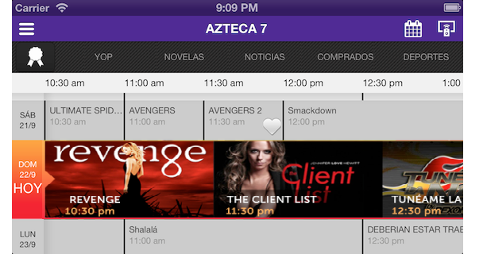

Want to show an ImageGallery and browse thru it in a very intuitive way? Want to have a natural view of locations using a Map? Want to rate a product using a StarRating control instead of typing a value?
GeneXus X Evolution 2 provides these kinds of controls and more so you can build flexible and intuitive applications for Smart Devices. Besides, you will be able to create your own custom controls! These controls are called "User Controls for Smart Devices". User controls will make it easy to create flexible and intuitive applications by taking advantage of most of the features available currently in smart devices.
User Controls like these ones can be included in GeneXus applications
Probably, you've already imagined more such as various controls that differ in functionality and complexity. For this reason, we are developing an extensible control platform to let you integrate a broad set of controls.
There are two types of user control for smart devices: Item and List.
The items user controls apply for single valued items, such as:
The list ones applied for complex data types such as a collection, Structured Data Type or Data Provider object. Samples of this kind are:
| Control Type |
Description |
Example |
| SD Paged Grid |
It shows one register of a list per page. This enables you to show more information and navigate through the list more nicely. Also by double tapping, you can access the detailed view of the Item. See more... |
|
| SD Leaves |
Lets you have a similar experience of turning a page of a book. Each grid item is shown in a single page. See more... |
|
| SD Horizontal Grid |
Lets us show the elements horizontally, instead of the usual vertical way for a Grid. Also, it lets us control the way the elements are shown, letting us choose the number of columns and rows we want to display by page. See more... |
 |
| SD Magazine Viewer |
It allows to have an experience similar to reading a newspaper, magazine or catalog. Each page shows many articles (parts of them), that could be zooming in with a touch (the equivalent of “continued on page X” of a printed newspaper version). The number of items shown could vary among columns. See more... |
 |
| SD Image Gallery |
Lets you display the grid items as an image gallery. For that, there must be at least one attribute having an Image data type. See more... |
  |
| SD Maps |
Provides a way for displaying locations using a map and interacting with them. For that, the grid needs to have a geolocation value for each item. See more... |
|
| SD Image Map |
Lets you display a background image with regions identified by its coordinates {x, y} and a size. Each defined region can have an image to display on the coordinates defined to it with the defined size. Each region corresponds to one item of the list. See more... |
 |
| SD Charts |
Lets you display numeric information of a grid as a chart (pie or timeline). See more... |
|
| SD Spark Line |
It is often used to show high density series of numbers. See more... |
|
| SD Matrix Grid |
To display data in two-dimensional grids (as of GeneXus X evolution 3). See more... |
 |
|